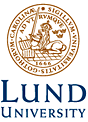

NetLab and friends
Tribute and outlook after 10 years of digital library development
|
 |
Programme with presentations from the conference speakers, updated 3 May
NetLab, the research and development department at Lund University
Libraries, celebrated its 10 years anniversary with a conference that took place 10th - 12th of April 2002 in Lund, Sweden.
This conference comprised of a number of sessions in areas that have
been central digital library development themes for NetLab and for the
community as a whole over recent years:
- Semantic web and knowledge organisation is a theme about knowledge
structuring and classification issues, a wide and very important area
of interest.
- Interoperability and integration of heterogeneous sources
will deal with the areas of metadata, web indexing and quality
controlled subject gateways.
The focus will be on different ways of cross-searching.
- Visions, future issues and current development are essential
since they focus on what is going on now and what will be major issues
in the future.
- The Nordic situation is another theme that we would like to
illuminate. The Nordic countries were relatively early implementers yet
despite apparently similar
circumstances and conditions there are highly contrasting Nordic
digital library solutions and policies.
We expect that these workshops will lead to further discussions,
insights and indeed future projects and we hope to encourage a lively
debate even after the conference.